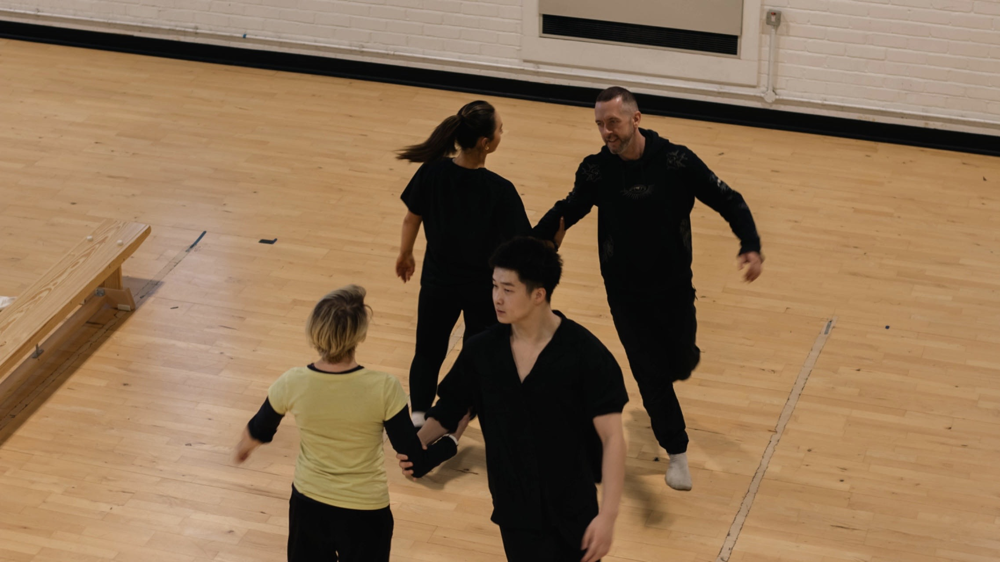
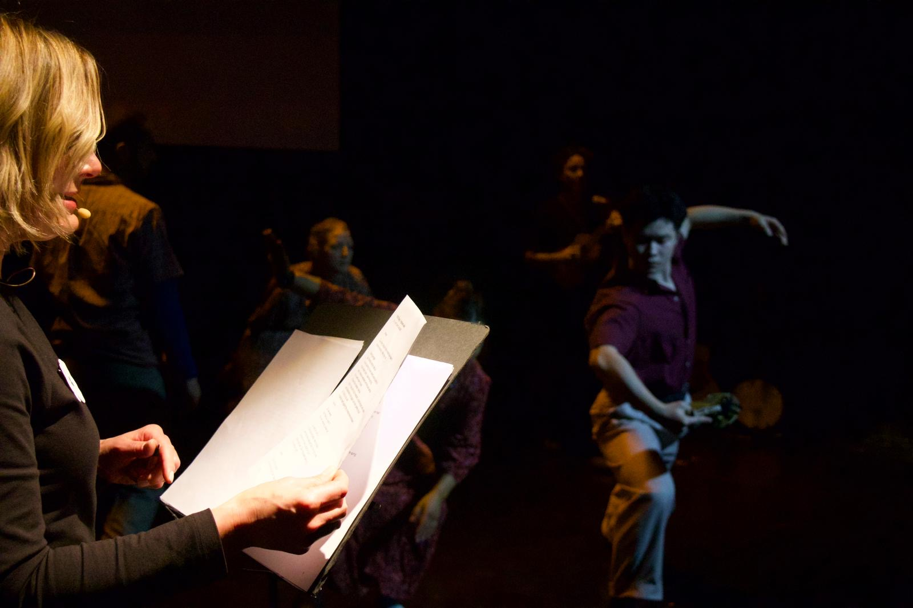
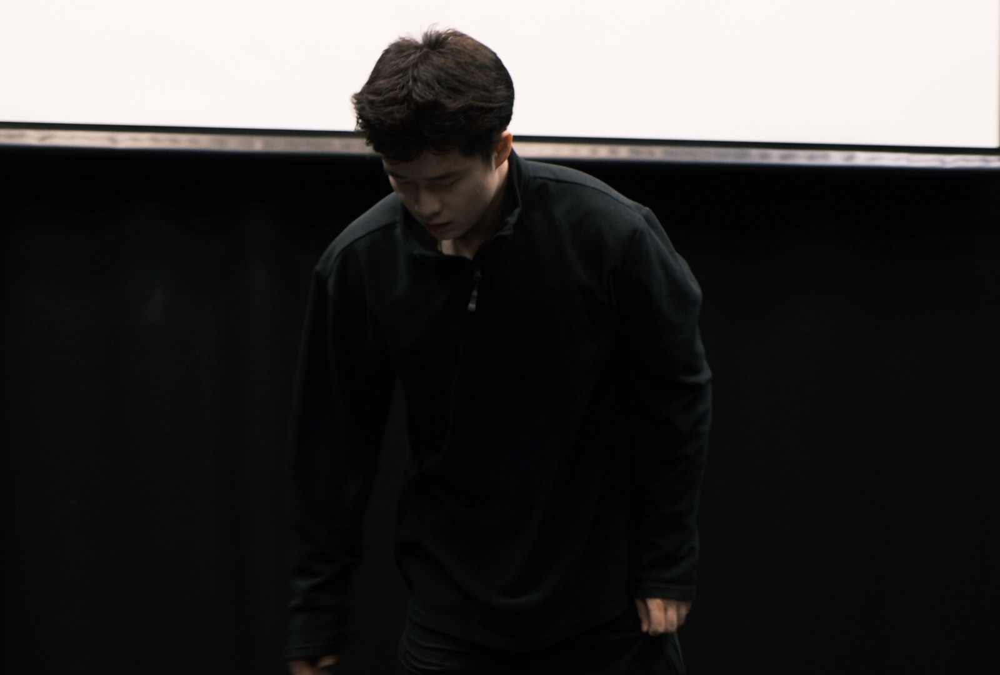
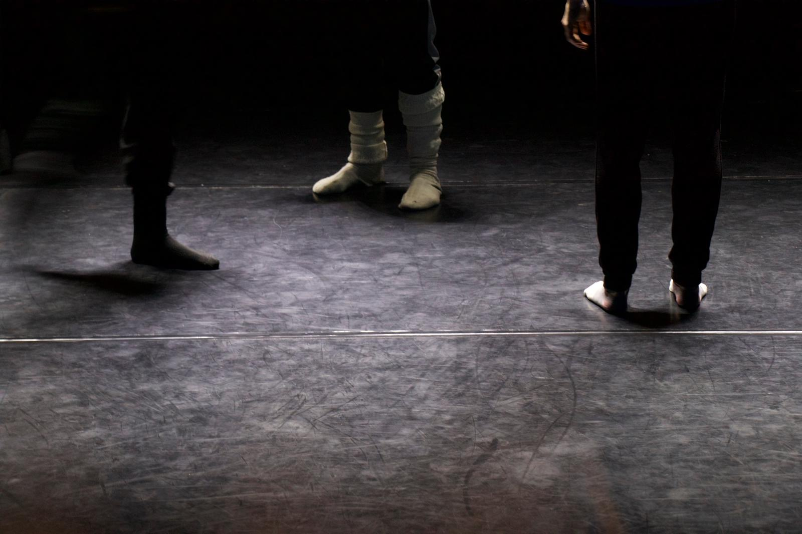
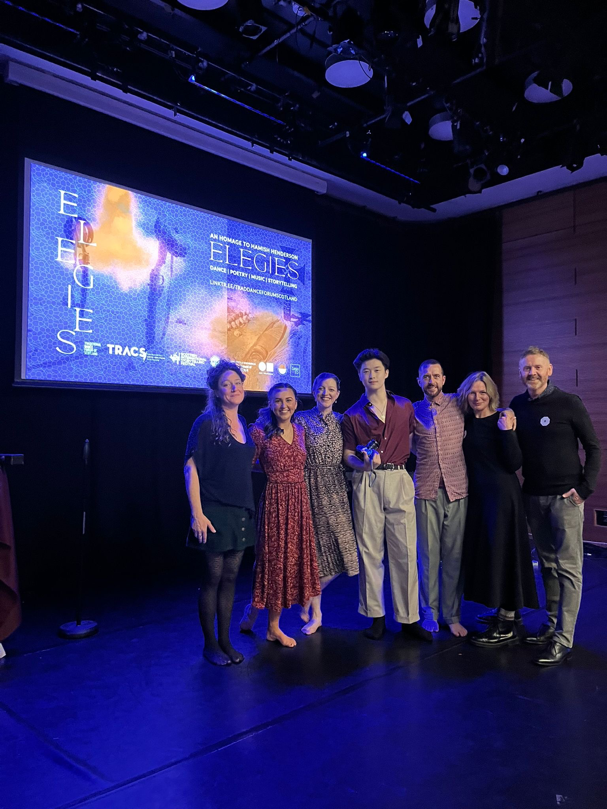
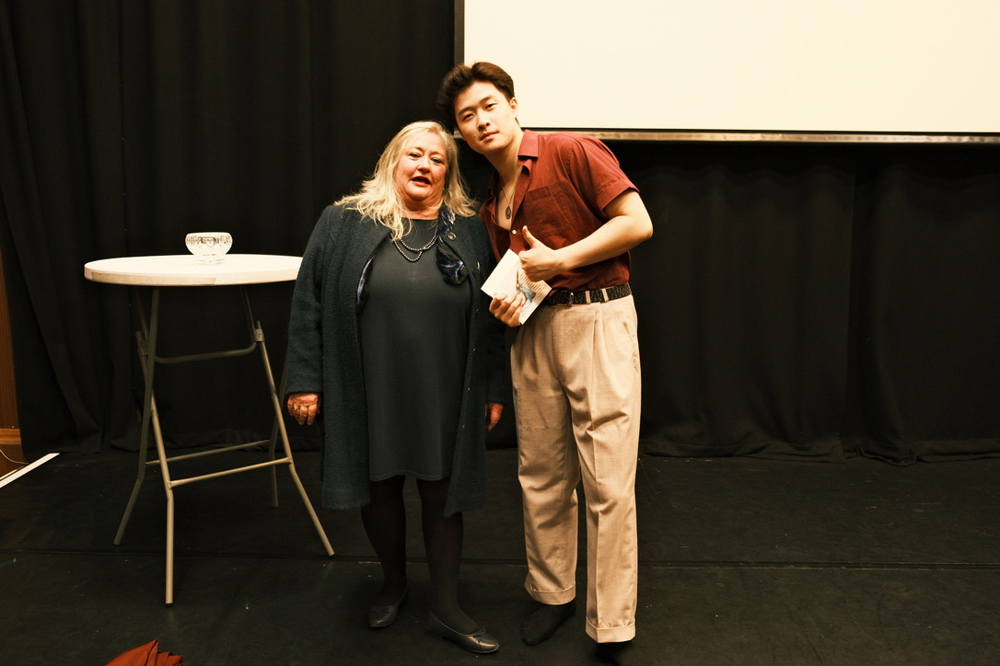
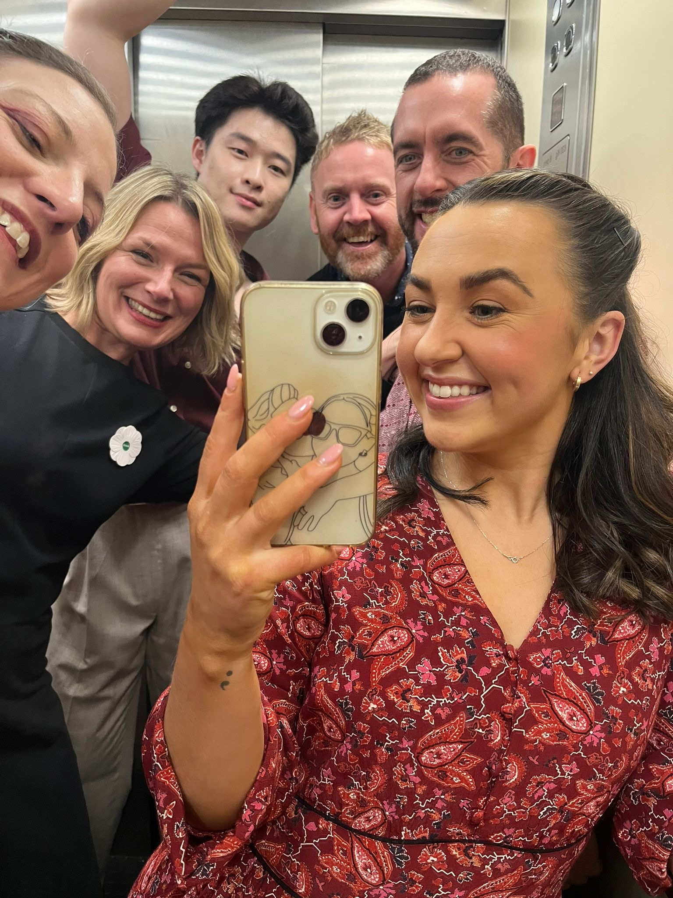
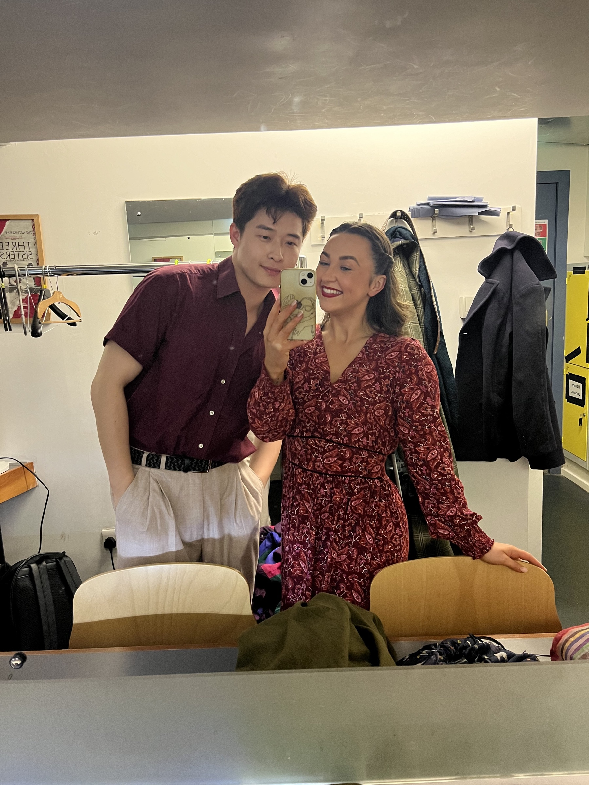

Elegies for the Dead in Cyrenaica
Dance PerformanceThe first dance adaptation of Hamish Henderson's poem cycle Elegies for the Dead in Cyrenaica, produced by the Traditional Dance Forum of Scotland and commissioned by the Scottish International Storytelling Festival. The work premiered at Edinburgh's Scottish Storytelling Centre on 11 November 2023, a date marking the seventy-fifth anniversary of the poems' first publication, and was revised for the Pomegranates Festival of traditional dance in April 2024. Choreography drew on ceilidh, jive, swing and lindy hop, performed barefoot to spoken word and live music. I danced in both runs, credited throughout as Edwin Wen.
Premiere Night
11.11.2023, Scottish Storytelling Centre
Highlights film by Traditional Dance Forum of Scotland. Videographer Barrie Barreto.
Rehearsals
Moray House School of Education and Sport, University of Edinburgh

Rehearsals trailer by Ling Hong. Rehearsal photography by Jeyden Xie.
In Rehearsal and Performance
Moray House and Scottish Storytelling Centre, Edinburgh
A record of the work across studio rehearsal, live performance and the people who made the production possible.







Posters
Scottish Storytelling Centre, Edinburgh
Two print-ready posters for the premiere of Elegies for the Dead in Cyrenaica.
Press
“The particularly sinuous Edwin Wen.”
Production also covered in
- Corr Blimey
-
Radio Summerhall Arts
Elegies at Pomegranates Festival, Scottish Storytelling Centre
-
Radio Summerhall Arts
Pomegranates Festival presents dance adaptation of Hamish Henderson poem
-
The NEN, North Edinburgh News
Dance adaptation of Hamish Henderson's poetry at the Pomegranates Festival
Star ratings refer to the production. Links go to the publishers. No article text is reproduced here beyond the quotation above.
Credits
- Curators and producers
- Jim Mackintosh, Iliyana Nedkova, Wendy Timmons
- Lead dancers and choreographers
- Helen Gould, George Adams
- Community cast of dancers
- Nicola Thomson, Edwin Wen
- Spoken word
- Morag Anderson, Stephen Watt
- Live music and vocals
- Cera Impala
- Lighting and audio visuals
- Roddy Simpson
- Videographer
- Barrie Barreto
Production
Executive producer: Traditional Dance Forum of Scotland. Commissioned by the Scottish International Storytelling Festival through the Scottish Government's Expo Fund, with additional funding from Creative Scotland. Community cast and crew supported by DannsEd, the University of Edinburgh Dance Company and Society, in partnership with Moray House School of Education and Sport.